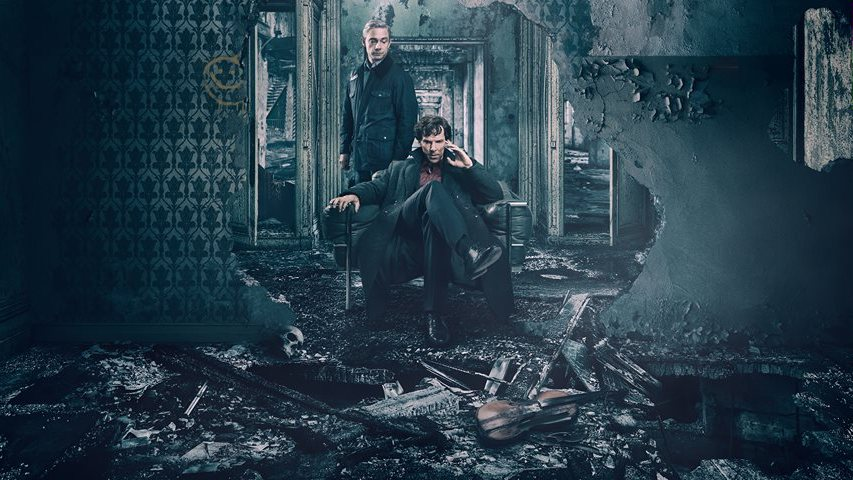

-

-

Sherlock (TV series)
Language : English
Channel : BBC One
Running Since : 25 July 2010
Running Till : Now
Genre : Crime Drama
Duration : 90Minutes
Current Season : 4
Current Episode : 13
All Ratings
Official Social Media Accounts
Facebook :
Twitter :
YouTube :
Google+ :
Official Website
Description
Cast:Benedict Cumberbatch, Martin Freeman, Rupert Graves, Una Stubbs, Mark Gatiss, Louise Brealey, Andrew Scott, Amanda Abbington
Creator(s): Mark Gatiss & Steven Moffat
Premise
Dr. Watson, a former army doctor, finds himself sharing a flat with Sherlock Holmes, an eccentric individual with a knack for solving crimes. Together, they take on the most unusual cases. Source:Google
Hot News
Who is Andrew Scott? Actor who played Jim Moriarty in Sherlock and Hamlet starBy:The Sun - Jun 6, 2017
Sherlock's Moriarty teases possible return of the showBy:Buzz.ie - Jun 6, 2017
How was world's most famous fictional detective born? Michael Sims' book Arthur and Sherlock tells usBy:India Today - Jun 3, 2017
Powerhouse Museum Sherlock Holmes exhibition unites science, literature ... and bloodBy:The Sydney Morning Herald - Jun 2, 2017
Scroll Down For more newsSeason 4 Episodes
| Episode No |
Total In Season |
Title | Director | Air date |
|---|---|---|---|---|
| 11 | 1 | The Six Thatchers | Rachel Talalay | January 1, 2017 |
Plot
Sherlock is asked to investigate the mysterious death of a young man, which he solves quickly but he is led into another mystery when a bust of Margaret Thatcher owned by the dead man's father is smashed. Further busts are smashed and Sherlock discovers that the mystery is linked to Mary and her past as a government agent. A figure from her past is bent on revenge in the belief that Mary betrayed him, but Sherlock discovers that someone else was really the traitor.Source:Wikipedia
| 12 | 2 | The Lying Detective | Nick Hurran | January 8, 2017 |
Plot
Sherlock is contacted by the daughter of entreprenuer, Culverton Smith, who she claims has confessed to a murder but she does not know who the victim was since her father has used a drug on her that inhibits memory. Sherlock deduces that her father is a serial killer and sets out to expose and stop him, but he is under the influence of drugs and unable to clearly distinguish his own thoughts from reality. He confronts and attacks Smith, and John is forced to subdue him. While recovering in hospital, Smith appears in Sherlock's room, confesses and then tries to kill him. John bursts in just in time to save Sherlock, who reveals that his behavior up to that point was not just an elaborate ploy to expose Smith, but also fulfilling Mary's last wish for him to "Save John". Later John's therapist reveals that she is actually Sherlock's secret sister, Eurus, and has been using disguises to manipulate both Sherlock and Watson. The episode ends with Eurus firing a shot at John. Source:Wikipedia
| 13 | 3 | The Final Problem | Ben Caron | January 15, 2017 |
Plot
Sherlock and Watson – who had been shot with a tranquilizer by Eurus – trick Mycroft into acknowledging her existence. Eurus steps up her attacks on Sherlock, culminating in the bombing of his Baker Street apartment. Sherlock, Watson and Mycroft venture forth to Sherrinford, a maximum-security psychiatric facility where Eurus is housed. Although Mycroft is sceptical at the suggestion that she has escaped, the trio discover that Eurus has compromised the staff and controls the entire Sherrinford asylum. She subjects the trio to a series of ordeals, testing their morals by forcing them to choose which of her victims live and die and ultimately forcing Sherlock to confront the memory of "Redbeard", a childhood friend whose death set in motion events that saw Eurus incarcerated. Realising that she will continue to test him until someone he cares for dies, Sherlock tries to connect with her on an emotional level, offering her the love and relationship with a brother that she never had, and Eurus stands down. Sherlock and Watson return to the Baker Street apartment, where they find another message from Mary imploring them to stay together. A time lapse montage shows them rebuilding the Baker Street flat to its original lived in form before meeting a series of unusual clients. Source:Wikipedia
Reviews & News
Who is Andrew Scott? Actor who played Jim Moriarty in Sherlock and Hamlet starBy:The Sun - Jun 6, 2017
Sherlock's Moriarty teases possible return of the showBy:Buzz.ie - Jun 6, 2017
How was world's most famous fictional detective born? Michael Sims' book Arthur and Sherlock tells usBy:India Today - Jun 3, 2017
Powerhouse Museum Sherlock Holmes exhibition unites science, literature ... and bloodBy:The Sydney Morning Herald - Jun 2, 2017
Sleuthing with Sherlock HolmesBy:ABC Local - Jun 2, 2017
Sherlock Live: Fans challenged to solve live Twitter mysteryBy:Telegraph.co.uk
You can solve a crime case with Sherlock on BBC1's Twitter account this eveningBy:Time Out London
SHERLOCK Will Host a Live Mystery for Fans to Solve on TwitterBy:Nerdist
Sherlock is slowly and perversely morphing into Bond. This cannot standBy:The Guardian
Sherlock: Cumberbatch's return in The Six Thatchers was worth all the hype - reviewBy:Telegraph.co.uk
Sherlock: 11 Easter Eggs, Callbacks, and References You Might Have Missed in “The Six Thatchers”By:Vanity Fair
'Sherlock' is getting stale - now it's time to end the showBy:INSIDER
Sherlock showrunner explains that shocking premiere endingBy:Entertainment Weekly
Sherlock's season 4 premiere offers a disappointing end to a 3-year-old mysteryBy:Vox
Trailers And Others Videos